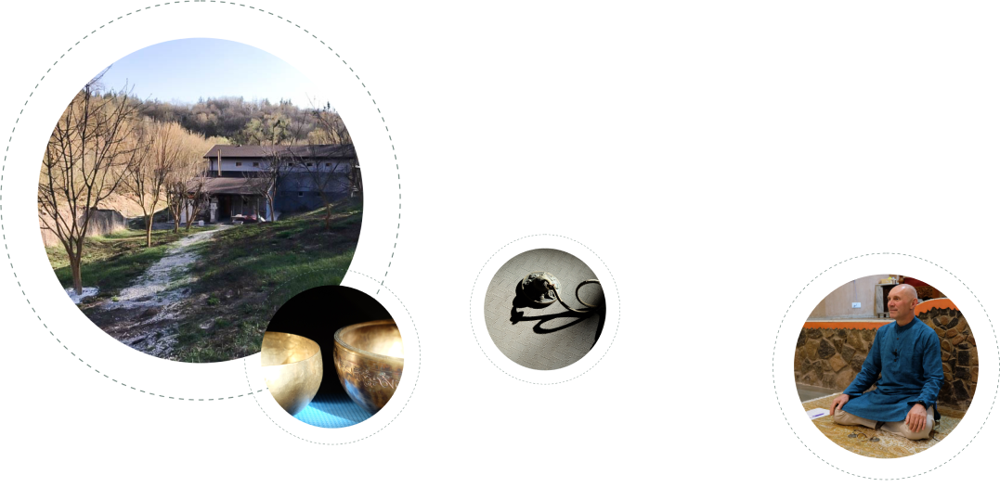

Друзья
Прежде всего хочу поблагодарить вас за возможность общения, доверие, щедрость.
Все это уже состоялось - мы общаемся и делимся.
И это прекрасно!
Здесь вы можете выразить свою благодарность за материалы, опубликованные в социальных сетях и на наших каналах в YouTube, а также поучаствовать в проекте строительства ритритного центра.
Проведение сатсангов и публикация видео, как вы знаете, делается бесплатно. И тем не менее это требует определенных затрат времени и средств на аренду помещений и монтаж видео. Поэтому наша команда будет вам благодарна за любые средства, перечисленные для этих целей.
Ритритно-тренинговый
центр Нисарга

Строительство ритритно-тренингового центра (РТЦ) "НИСАРГА" начато в марте 2017 года. Это пространство, создаваемое Центром самопознания с целью проведения тренингов и ритритов (групповых и индивидуальных). Включает зал для тренингов, медитации и три индивидуальных дома для тёмного ритрита, расположенных на территории лесного массива в Черскасской области (140 км от Киева).
Центр строится на благотворительные взносы. В настоящее время (весна 2020) построен зал, сделана внешняя отделка, отопление и комнаты для проживания. Предстоит сделать санузлы, кухню-столовую и спортивный зал.
Место, где располагается центр, обладает всеми качествами, благоприятными для практики и уединения: удалено от населённых пунктов и дорожной сети, укрыто холмистым рельефом Каневских гор, наполнено чудесным воздухом и звуками природы.